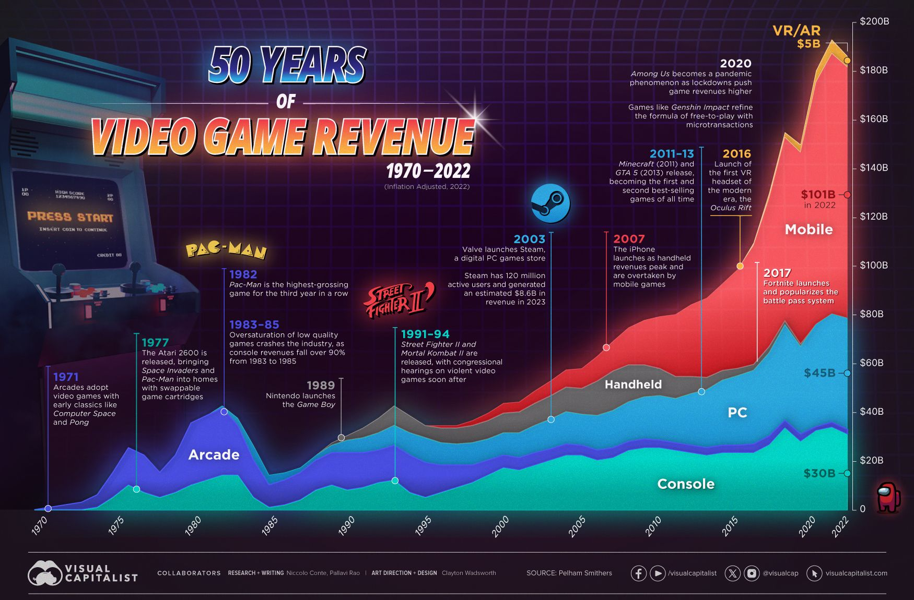
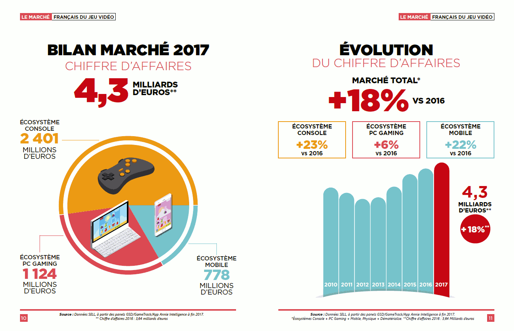

Économie dans le domaine du jeu vidéo
Un symbole des fragilités structurelles
Les difficultés économiques rencontrées par certains grands éditeurs illustrent la fragilité croissante d’un secteur pourtant en apparente bonne santé. Le cas d’Ubisoft est particulièrement emblématique...
Ubisoft incarne ainsi les limites d’un modèle basé sur les franchises à répétition...
Krash de 1984 : un rappel que le jeu vidéo reste vulnérable aux déséquilibres économiques...
Comprendre la crise du jeu vidéoLe freemium, un piège économique ?
Le modèle free-to-play, qui permet d’accéder gratuitement à des jeux comme Fortnite ou Genshin Impact, a largement démocratisé le jeu vidéo en attirant un public très large...
Comment les entreprises arrivent-elles à promouvoir leur jeu vidéo ?
Les studios utilisent aujourd’hui une multitude de stratégies marketing pour promouvoir leurs jeux...
